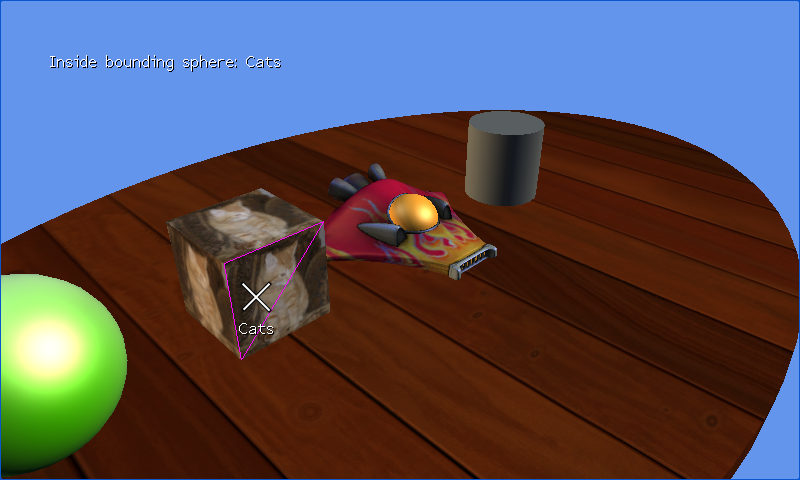

Triangle Picking
Ported from Microsoft's XNA 4.0 Triangle Picking Sample.
Source for this sample on GitHub ↗

Play ▸Opens in a new tab.
About this sample
Four models sit on a textured table. Point at an individual triangle to highlight its edges in magenta. The camera can orbit around the scene to make other faces visible.
Controls
| Action | Mouse or keyboard |
|---|---|
| Highlight a triangle | Move the pointer over a model |
| Orbit the camera | Left and Right arrow keys |
| Reset the camera | R |
| Exit | Escape |